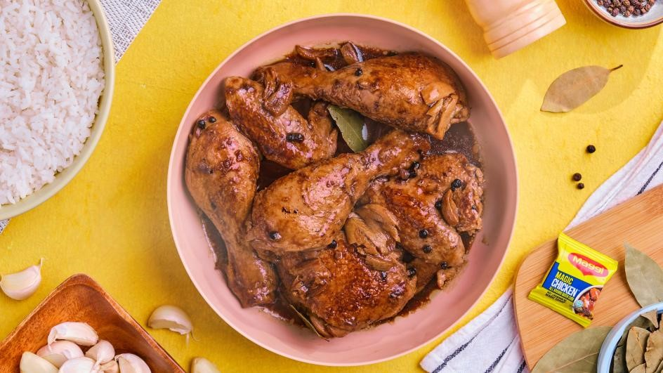
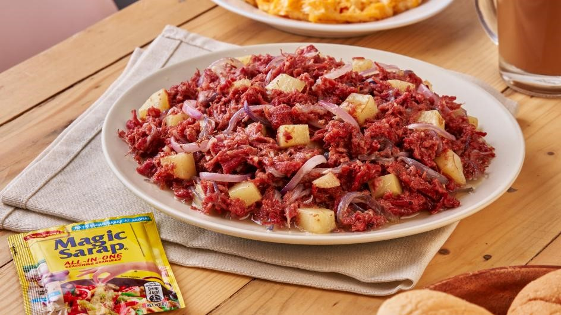
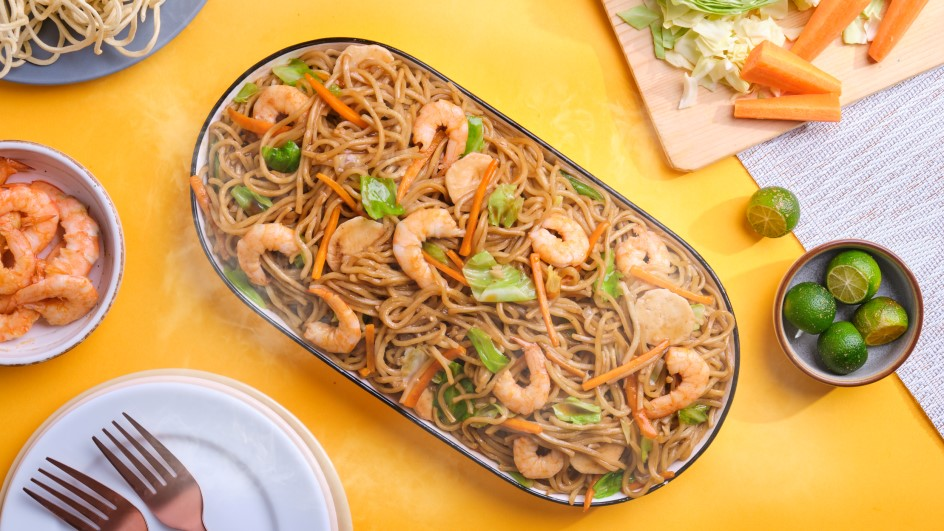
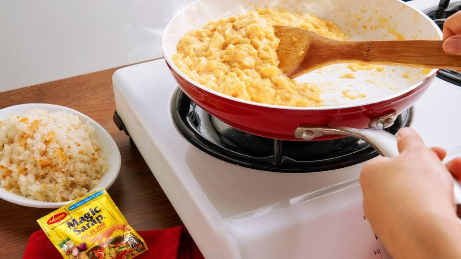

FAVORITE TIKA
Fried Eggs
- A fried egg is a cooked dish made from one or more eggs which are removed from their shells and placed into a frying pan and fried. They are traditionally eaten for breakfast in many countries but may also be served at other times of the day.
Ingredients
- Eggs as many as you want to cook.
- Butter or Oil 1-2 tablespoons (for frying).
- Salt To taste.
INSTRUCTIONS
- Heat a non-stick skillet or frying pan over medium heat.
- Add the butter or oil. Let it melt and coat the pan evenly.
Heat the Pan:
- Crack the eggs into a bowl one at a time to avoid any shell bits getting into the pan. If you're confident, you can crack them directly into the pan.
- Gently slide the eggs into the pan, one at a time.
Crack the Eggs:
- Sunny-Side Up let the eggs cook undisturbed until the whites are fully set but the yolks remain runny. This usually takes about 2-3 minutes.
- Over-Easy/Medium/Hard: If you prefer your yolks cooked through or with a slightly firmer consistency, flip the eggs gently using a spatula and cook for an additional 30 seconds to 2 minutes, depending on how well-done you want the yolk.
- Season with salt and pepper to taste.
Cook the Eggs:
Chicken Adobo
- Chicken Adobo is a type of Filipino chicken stew. Chicken pieces are marinated in soy sauce and spices, pan-fried, and stewed until tender. The dish gained popularity because of its delicious taste and ease in preparation.
Ingredients
- 1 kg 1 (2.2 lbs) chicken thighs or drumsticks, cut into pieces.
- 1/4 cup soy sauce.
- 1/4 cup vinegar (white or cane vinegar works best).
- 1/2 cup water.
- 1 tablespoon vegetable oil.
- 6 cloves garlic, minced.
- 1 onion, sliced.
- 2-3 bay leaves.
- 1 tablespoon whole black peppercorns.
- 2 tablespoons brown sugar (optional, adjust to taste).
- Salt and pepper, to taste.
INSTRUCTIONS
- In a bowl, combine the chicken pieces with soy sauce, vinegar, minced garlic, and a few bay leaves. Marinate for at least 30 minutes or up to overnight in the refrigerator for better flavor.
- Heat vegetable oil in a large pot or skillet over medium-high heat. Remove the chicken from the marinade (discard the marinade) and sear the chicken pieces until browned on all sides. This step adds depth to the flavor.
- Add the sliced onion to the pot and sauté until softened.
- Pour in the water and add the whole peppercorns. If using, add the optional ingredients like fish sauce, oyster sauce, or tomato paste at this stage. Bring the mixture to a boil, then reduce the heat to low and cover. Let it simmer for about 30-40 minutes, or until the chicken is tender and the sauce has thickened.
- If you're adding potatoes, stir them in about 15-20 minutes before the end of cooking, so they cook through and absorb some of the sauce flavors.
- Taste and adjust seasoning with salt, pepper, or additional sugar if needed. Once the chicken is tender and the sauce is to your desired consistency, remove from heat and ready to serve.
Corned Beef
- Corned beef is meat that has been cured in a salt solution. Before refrigeration, meat was salted and cured to be preserved. Historically, any type of meat could be put through the curing process that makes what we know as corned beef today.
Ingredients
- Canned Corned Beef: 1 can (typically 12 ounces).
- Oil or Butter: 1-2 tablespoons (optional, for frying).
- Onion: 1 medium, diced (optional, for added flavor).
- Garlic: 2 cloves, minced (optional, for added flavor).
- Potatoes: 2-3, peeled and diced (optional, for a hearty meal)
- Salt and Pepper: To taste.
INSTRUCTIONS
- Potatoes: If using, peel and dice the potatoes into small cubes.
- Vegetables: Dice any additional vegetables you want to include.
- Cook the Potatoes (if using) Heat a pan over medium heat and add a little oil or butter.
- Add the diced potatoes and cook, stirring occasionally, until they are golden and tender. This usually takes about 10-15 minutes.
- In the same pan, add diced onions and cook until they are translucent, about 5 minutes.
- Add minced garlic and cook for an additional 1-2 minutes, being careful not to burn it.
- Open the can of corned beef and add it to the pan. You can break it up with a spatula or fork as it heats.
- Add any additional vegetables like peas, carrots, or bell peppers. Stir to combine.
- Season with salt and pepper to taste. You can also add a splash of Worcestershire sauce or soy sauce for extra flavor.
- Cook everything together until the corned beef is heated through and the vegetables are tender, about 5-10 minutes.
- Serve the corned beef hot, directly from the pan. It pairs well with rice, bread, or as a filling for sandwiches.
Ginataang Langka

- Ginataang langka, is a Filipino vegetable stew made from unripe jackfruit in coconut milk and spices. The dish includes a wide variety of secondary ingredients like seafood, meat, and other vegetables.
Ingredients
- Young Jackfruit: If using fresh jackfruit, peel and slice it into small pieces. If using canned, drain and rinse it well.
- Pork (if using): Cut into bite-sized pieces.
- 1 large onion diced.
- 5 cloves crushed garlic.
- 3/4 cup tomatoes diced.
- 3 to 5 pieces red chilies.
- 3/4 cup water.
- 1/2 cup fried dried fish daing, bones removed.
INSTRUCTIONS
- Heat a wok or a cooking pot and pour-in the coconut milk. Bring to a boil.
- Add the garlic and onions and cook for 3 to 5 minutes while continuously stirring the mixture.
- Put-in the tomatoes and red chilies. Continue stirring to prevent lumps from forming.
- Add the fried dried fish and cook for 5 minutes.
- Pour-in water and allow re-boiling.
- Add the chopped jackfruit then mix with the other ingredients. Simmer for 5 to 8 minutes.
- Put-in the shrimp cube then stir to ensure that the ingredients are properly distributed. Simmer until the liquid dries up.
- Transfer to a serving plate then serve..
- Share and enjoy!
LUMPIANG SHANGHAI

Lumpiang Shanghai is a Filipino deep-fried appetizer consisting of a mixture of giniling with vegetables like carrots, chopped scallions or red onions and garlic, wrapped in a thin egg crêpe.
Ingredients
- 1 pound ground pork.
- 1 pound ground beef.
- 1 medium onion, finely chopped.
- 1 carrot, grated.
- 2 tablespoons salt.
- 1 ½ tablespoons garlic powder.
- 2 ½ teaspoons black pepper.
- 1 (16 ounce) package spring roll wrappers.
- ¼ cup water, or as needed.
- 1 ½ quarts oil for frying.
- Lumpiang Shanghai is a Filipino deep-fried appetizer consisting of a mixture of giniling with vegetables like carrots, chopped scallions or red onions and garlic, wrapped in a thin egg crêpe.
INSTRUCTIONS
- Combine ground pork, ground beef, onion, and carrot in a large bowl; mix well with hands. Gradually blend in soy sauce, salt, garlic powder, and pepper until incorporated.
- Working one at a time, lay a wrapper on a flat surface with a corner pointing at you. Place about 2 tablespoons filling in a line, no thicker than your thumb, across the center of the wrapper. Moisten the edges of wrapper with water. Fold the bottom edge of wrapper snugly over filling. Fold in the left and right sides of wrapper towards the center. Roll up tightly to seal in filling.
- Heat oil in a deep fryer or heavy skillet to 375 degrees F (190 degrees C.)
- Working in batches, fry lumpia in hot oil, turning once, until golden brown, 3 to 4 minutes. Drain on a paper towel-lined plate. Cut lumpia in half, or serve as-is with dipping sauce.
PANCIT CANTON
- Pancit canton is a Filipino dish of Chinese origin which combines yellow wheat noodles and a variety of meat, seafood, and vegetables, blended with a flavorful mixture of soy and oyster sauce.
Ingredients
- 200g Pancit Canton noodles (fresh or dried)
- 2 tablespoons vegetable oil
- 2 cloves garlic, minced
- 1 onion, thinly sliced
- 1/2 cup carrots, julienned
- 1/2 cup green bell pepper, sliced
- 1/2 cup red bell pepper, sliced
- 1/2 cup cabbage, shredded
- 1/2 cup snow peas or green beans (optional)
- 100g cooked chicken, pork, or shrimp (sliced or diced)
- 2 tablespoons soy sauce
- 1 tablespoon oyster sauce (optional)
- 1 tablespoon fish sauce (optional)
- 1/2 cup chicken or vegetable broth
- Salt and pepper to taste
- Lemon or calamansi wedges (for serving)
INSTRUCTIONS
- If using dried Pancit Canton noodles, cook them according to the package instructions until just tender. Drain and set aside. If using fresh noodles, you can skip this step.
- In a large skillet or wok, heat the vegetable oil over medium heat.
- Add the minced garlic and sliced onion. Sauté until the garlic is fragrant and the onion becomes translucent.
- Add the cooked chicken, pork, or shrimp to the pan. Stir-fry until the protein is heated through and slightly browned.
- Add the carrots, bell peppers, and snow peas or green beans (if using). Stir-fry for a few minutes until the vegetables are crisp-tender.
- Add the Pancit Canton noodles to the pan. Gently toss to combine with the vegetables and protein.
- Pour in the soy sauce, oyster sauce (if using), and fish sauce (if using). Stir to coat the noodles and vegetables evenly.
- Add the chicken or vegetable broth. Let it simmer for a few minutes, stirring occasionally, until the noodles are heated through and have absorbed the flavors.
- Taste and adjust seasoning with salt and pepper if needed. Add the shredded cabbage and cook for an additional minute, just until the cabbage is slightly wilted.
- Serve hot with lemon or calamansi wedges on the side.
Egg Salad

- Egg salad is a dish consisting of chopped hard-boiled or scrambled eggs, mustard, and mayonnaise, and vegetables often including other ingredients such as celery. It is made mixed with seasonings in the form of herbs, spices and other ingredients, bound with mayonnaise.
Ingredients
- Eggs 6 large.
- Mayonnaise 1/4 cup (or to taste).
- Mustard 1 tablespoon (optional, yellow or Dijon).
- Celery 1-2 stalks, finely chopped.
- Red Onion 1/4 cup, finely chopped (optional).
- Salt 1/4 teaspoon (or to taste).
- Black Pepper: 1/4 teaspoon (or to taste).
INSTRUCTIONS
- Hard-Boil the Eggs: Place eggs in a saucepan and cover with cold water. Bring to a boil over medium-high heat.
- Once boiling, cover the pot and remove it from heat. Let the eggs sit for 12 minutes.
- After 12 minutes, transfer the eggs to a bowl of ice water to cool for a few minutes. This helps make peeling easier.
- Peel the eggs and chop them into small pieces. You can do this by dicing them with a knife or using an egg slicer.
- Mix the Salad, In a mixing bowl, combine the chopped eggs, mayonnaise, and mustard (if using).
- Add finely chopped celery and red onion (if using).
- Season with salt and pepper to taste.
- Garnish and Serve, Garnish with a sprinkle of paprika and fresh herbs, if desired. .
- Serve the egg salad on bread, crackers, or lettuce leaves. It can also be enjoyed as a side dish or filling for sandwiches.
Scrambled Egg
- Scrambled eggs is a dish made from eggs stirred, whipped, or beaten together typically with salt, butter, oil, and sometimes other ingredients, and heated so that they form into curds.
Ingredients
- Eggs 4 large.
- Milk or Cream 2-3 tablespoons (optional, for creaminess).
- Salt 1/4 teaspoon (or to taste).
- Black Pepper 1/4 teaspoon (or to taste).
- Butter or Oil 1-2 tablespoons (for cooking).
INSTRUCTIONS
- Heat a non-stick skillet or frying pan over medium-low heat..
- Add butter or oil and let it melt and coat the pan.
- Pour the egg mixture into the pan.
- Let the eggs sit undisturbed for a few seconds until they start to set around the edges.
- Gently stir and fold the eggs with a spatula, pushing them from the edges towards the center. This helps create soft, fluffy curds.
- Continue gently stirring and folding the eggs until they are mostly set but still slightly runny. The residual heat will finish cooking them.
- Avoid over-stirring, as it can make the eggs tough.
- Once the eggs are cooked to your desired consistency, remove them from the pan immediately to prevent overcooking.
- Taste and Serve.
Spaghetti

- Spaghetti (Italian: [spa'gtti]) is a long, thin, solid, cylindrical pasta. It is a staple food of traditional Italian cuisine. Like other pasta, spaghetti is made of milled wheat, water, and sometimes enriched with vitamins and minerals. Italian spaghetti is typically made from durum-wheat semolina.
Ingredients
- Spaghetti (about 2 ounces per person, but adjust based on appetite).
- Olive oil (2-3 tablespoons).
- Garlic (2-3 cloves, minced).
- Onion (1, chopped).
- Canned tomatoes (1 can, usually 14.5 ounces, crushed or whole and then crushed).
- Tomato paste (2 tablespoons, optional for thicker sauce).
- Salt (to taste).
- Black pepper (to taste).
- Dried basil (1 teaspoon) or fresh basil (a few leaves, chopped).
- Dried oregano (1 teaspoon) or fresh oregano (a few leaves, chopped).
- Red pepper flakes (optional, for heat).
- Sugar (a pinch, optional, to balance acidity).
For the Pasta:
For the Sauce:
INSTRUCTIONS
- Boil Water: Fill a large pot with water and add a generous pinch of salt. Bring it to a rolling boil.
- Cook Spaghetti: Add the spaghetti to the boiling water. Stir occasionally to prevent sticking. Cook according to the package instructions (usually around 8-12 minutes) until al dente.
- Drain Pasta: Once cooked, drain the spaghetti in a colander. You can reserve a small cup of pasta water to adjust the sauce later if needed.
Prepare the Pasta:
- Heat Oil: While the pasta is cooking, heat olive oil in a large skillet over medium heat.
- Cook Aromatics: Add chopped onion and cook until translucent, about 5 minutes. Add minced garlic and cook for an additional 1-2 minutes until fragrant.
- Add Tomatoes: Stir in canned tomatoes. If using whole tomatoes, break them up with a spoon or use a hand blender for a smoother texture. Add tomato paste if you want a thicker sauce.
- Season: Add salt, black pepper, dried basil, dried oregano, and red pepper flakes (if using). Stir well.
- Simmer: Bring the sauce to a simmer and cook for about 15-20 minutes, allowing the flavors to meld. Taste and adjust seasoning if needed. If the sauce is too acidic, you can add a pinch of sugar to balance it out.
Make the Sauce:
- Mix Pasta and Sauce: Add the cooked spaghetti to the sauce and toss to coat well. If the sauce seems too thick, you can add a bit of the reserved pasta water to reach your desired consistency.
- Serve: Plate the spaghetti and top with freshly grated Parmesan cheese if desired. Garnish with fresh basil or parsley.
Combine and Serve:
Utan Bisaya

- Utan bisaya is a simple Filipino vegetable dish that is composed of a variety of veggies. The vegetables are boiled in water and sometimes fish is added for subak ( to make your utan yummy).
Ingredients
- Water or Broth: 4-6 cups.
- Onion 1 large, chopped.
- Garlic 3 cloves, minced.
- Tomato 1-2, chopped (optional).
- Kangkong (water spinach) or malunggay (moringa leaves).
- Sitaw (string beans).
- Talong (eggplant).
- kalabasa (squash).
- Okra (optional).
- Corn (cut into chunks, optional).
- Salt and Pepper To taste.
INSTRUCTIONS
- Meat/Seafood: If using pork, cut it into bite-sized pieces. If using shrimp or fish, clean and prepare them as needed..
- Vegetables: Wash and cut the vegetables into appropriate sizes. For example, slice the eggplant, cut the string beans into 2-inch pieces, and peel and cube the squash..
- Cook the Meat/Seafood (if using) Heat oil in a large pot over medium heat.
- Add the chopped onions and cook until translucent.
- Add the minced garlic and cook for another 1-2 minutes.
- If using pork, add it to the pot and cook until it’s browned and cooked through.
- Add the chopped tomatoes (if using) and cook until they’re soft.
- Add the Broth, Pour in the water or broth and bring it to a boil. If using fish sauce, add it now.
- Let it simmer for about 15-20 minutes until the meat is tender (if using).
- Add the Vegetables, Start by adding the harder vegetables like squash and corn. Cook for about 5-7 minutes.
- Add the string beans, eggplant, and okra. Cook until the vegetables are tender but still crisp, about 5 minutes more.
- Finally, add the leafy greens like kangkong or malunggay and cook for an additional 2-3 minutes until wilted.
- Season and Serve taste and adjust the seasoning with salt and pepper as needed
- Serve hot as a main dish or side dish with rice.